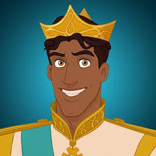
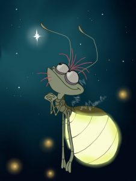
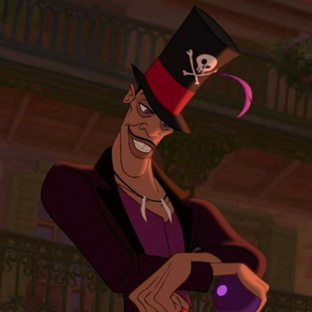

| Personaje | Descripción |
|---|---|
Tiana Pareja: Príncipe Naveen Padres: Eudora, James Creadores: Walt Disney Pictures Color de ojos: marrón castaño Color de pelo: cabello negro |
|
|  | Príncipe Naveen Pareja: Tiana Película: La princesa y el sapo Interpretado por: Bruno Campos |
Charlotte LaBouff Padres: Eli Gran Papi La Bouff Película: La princesa y el sapo |
|
|  | Ray Interpretado por: Grey Griffin Película: La princesa y el sapo |
Louis Interpretado por: Michael-Leon Wooley Película: La princesa y el sapo |
|
|  | Dr. Facilier Interpretado por: Keith David Película:La princesa y el sapo hechicero y practicante de magia vudú |